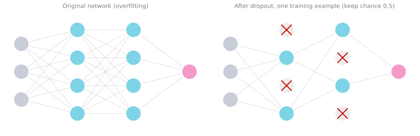
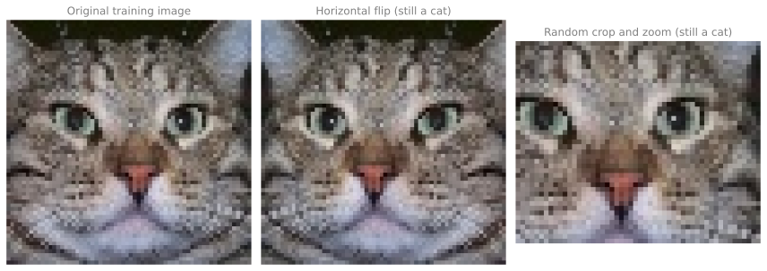
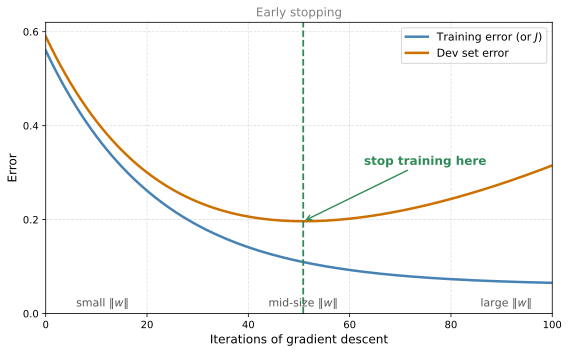

Regularizing Your Neural Network
deep-learning
regularization
dropout
L2 and L1 regularization, weight decay, dropout and inverted dropout, plus data augmentation and early stopping to reduce overfitting.
The basic recipe named regularization as a main tool against high variance. This page defines L2 regularization for logistic regression and for neural networks, builds the intuition for why it reduces overfitting, then introduces a second powerful technique called dropout, and closes with two more methods, data augmentation and early stopping.
L2 Regularization
If you suspect your neural network is overfitting your data, that is, you have a high variance problem, one of the first things to try is probably regularization. The other reliable way to address high variance is to get more training data, but you cannot always get more, or it could be expensive. Adding regularization often helps prevent overfitting and reduce variance in the network.
Regularizing Logistic Regression
Develop the idea with logistic regression first. Recall that logistic regression tries to minimize the cost function
\[ J(w, b) = \frac{1}{m} \sum_{i=1}^{m} \mathcal{L}(\hat{y}^{(i)}, y^{(i)}) \]
where the parameters are \(w \in \mathbb{R}^{n_x}\) and the real number \(b\). To add regularization, you add a term to the cost.
\[ J(w, b) = \frac{1}{m} \sum_{i=1}^{m} \mathcal{L}(\hat{y}^{(i)}, y^{(i)}) + \frac{\lambda}{2m} \|w\|_2^2 \qquad \text{where} \qquad \|w\|_2^2 = \sum_{j=1}^{n_x} w_j^2 = w^T w \]
Here \(\lambda\) is called the regularization parameter, and \(\|w\|_2^2\) is just the squared Euclidean norm of the parameter vector \(w\), familiar from the linear algebra course. Because the Euclidean norm is also called the L2 norm, this is called L2 regularization.
Why regularize just \(w\) and not \(b\)? In practice you could add a \(b\) term as well, but it is usually omitted. Look at the parameters. \(w\) is usually a pretty high dimensional vector, especially with a high variance problem, so almost all the parameters are in \(w\), while \(b\) is just a single number. Adding one parameter out of a very large number of them makes little difference in practice, so it is usually not worth bothering with, though you can include it if you want.
You might also hear about L1 regularization, which adds the L1 norm of \(w\) instead.
\[ \frac{\lambda}{m} \|w\|_1 = \frac{\lambda}{m} \sum_{j=1}^{n_x} |w_j| \]
(Whether the denominator is \(m\) or \(2m\) is just a scaling constant.) With L1 regularization, \(w\) ends up being sparse, meaning the vector contains a lot of zeros. Some people say this helps compress the model, because parameters that are zero need less memory to store. In practice, L1 regularization to make the model sparse helps only a little bit, so it is not used that much, at least not for compression. When training networks, L2 regularization is used much, much more often.
One last detail. \(\lambda\) is another hyperparameter to tune, usually set with the dev set (hold-out cross validation) by trying a variety of values and seeing what does best in the trade-off between fitting the training set well and keeping the norm of the parameters small to prevent overfitting. And a programming note. lambda is a reserved keyword in Python, so in the programming exercises the variable is spelled lambd, without the a, to avoid the clash.
Regularizing a Neural Network
In a neural network, the cost function is a function of all the parameters \(w^{[1]}, b^{[1]}\) through \(w^{[L]}, b^{[L]}\), where \(L\) is the number of layers. Regularization adds a penalty on every weight matrix.
\[ J(w^{[1]}, b^{[1]}, \ldots, w^{[L]}, b^{[L]}) = \frac{1}{m} \sum_{i=1}^{m} \mathcal{L}(\hat{y}^{(i)}, y^{(i)}) + \frac{\lambda}{2m} \sum_{l=1}^{L} \left\| w^{[l]} \right\|_F^2 \]
The squared norm of a matrix is defined as the sum of the squares of all its elements. Since \(w^{[l]}\) has \(n^{[l]}\) rows (the number of units in the current layer \(l\)) and \(n^{[l-1]}\) columns (the number of units in the previous layer), the sum runs
\[ \left\| w^{[l]} \right\|_F^2 = \sum_{i=1}^{n^{[l]}} \sum_{j=1}^{n^{[l-1]}} \left( w_{i,j}^{[l]} \right)^2 \]
You might expect this to be called the L2 norm of the matrix, but for arcane linear algebra reasons it is instead called the Frobenius norm, denoted with the subscript \(F\). The name does not change what it means, the sum of the squares of the elements of the matrix.
Weight Decay
How do you implement gradient descent with the new cost? Previously, backprop computed \(dw^{[l]}\), the partial derivative of \(J\) with respect to \(w^{[l]}\), and then you updated \(w^{[l]} := w^{[l]} - \alpha \, dw^{[l]}\). Now that the objective has the extra regularization term, you take what backprop gives you and add the derivative of the penalty term.
\[ dw^{[l]} = (\text{from backprop}) + \frac{\lambda}{m} w^{[l]} \]
With this new definition, \(dw^{[l]}\) is still the correct derivative of the cost function with respect to the parameters, and the update itself is unchanged.
\[ w^{[l]} := w^{[l]} - \alpha \, dw^{[l]} \]
It is for this reason that L2 regularization is sometimes called weight decay. To see why, plug the new \(dw^{[l]}\) into the update and multiply out.
\[ \begin{aligned} w^{[l]} &:= w^{[l]} - \alpha \left[ (\text{from backprop}) + \frac{\lambda}{m} w^{[l]} \right] \\ &= w^{[l]} - \frac{\alpha \lambda}{m} w^{[l]} - \alpha \, (\text{from backprop}) \\ &= \left( 1 - \frac{\alpha \lambda}{m} \right) w^{[l]} - \alpha \, (\text{from backprop}) \end{aligned} \]
Look at the first term. Whatever the matrix \(w^{[l]}\) is, the update multiplies it by \(1 - \frac{\alpha \lambda}{m}\), a number a little bit less than 1, making the weights a little bit smaller. So this is just like ordinary gradient descent, subtracting \(\alpha\) times the gradient from backprop, except the weights also get shrunk, or decayed, by that factor on every step. That is where the alternative name weight decay comes from.
Review Questions
1. Why is the bias parameter \(b\) usually left out of the L2 regularization term?
TipAnswer
Because it hardly matters. \(w\) is usually a very high dimensional vector, especially with a high variance problem, so almost all the parameters live in \(w\), while \(b\) is just one number. Penalizing one parameter among a very large number of them makes little practical difference, so it is usually omitted, though including it is not wrong.
1. What is the main practical difference between L1 and L2 regularization, and which is used more for neural networks?
TipAnswer
L1 regularization penalizes \(\frac{\lambda}{m} \sum_j |w_j|\) and drives \(w\) to be sparse, with many exactly-zero entries, which some people argue compresses the model since zero parameters need less memory. In practice the sparsity helps only a little, so L1 is not used much for that purpose. L2 regularization, which penalizes the squared norm, is used much more often when training neural networks.
1. In the programming exercises, why is the regularization parameter written lambd instead of lambda?
TipAnswer
lambda is a reserved keyword in Python (it defines anonymous functions), so it cannot be used as a variable name. Dropping the a gives lambd, which avoids the clash while staying recognizable.
1. Show why L2 regularization is also called weight decay.
TipAnswer
With regularization, the gradient becomes \(dw^{[l]} = (\text{from backprop}) + \frac{\lambda}{m} w^{[l]}\). Substituting into the update \(w^{[l]} := w^{[l]} - \alpha \, dw^{[l]}\) and multiplying out gives
\[ w^{[l]} := \left( 1 - \frac{\alpha \lambda}{m} \right) w^{[l]} - \alpha \, (\text{from backprop}) \]
The weight matrix is multiplied by \(1 - \frac{\alpha \lambda}{m}\), a number slightly less than 1, on every iteration, before the ordinary gradient step. The weights literally decay a little on each update, hence the name.
1. What is weight decay?
A regularization technique (such as L2 regularization) that results in gradient descent shrinking the weights on every iteration
A technique to avoid vanishing gradients by imposing a ceiling on the values of the weights
Gradual corruption of the weights in the neural network if it is trained on noisy data
The process of gradually decreasing the learning rate during training
TipAnswer
a. As derived above, L2 regularization multiplies each weight matrix by the factor \(1 - \frac{\alpha \lambda}{m}\), a number slightly less than 1, on every gradient descent update, so the weights shrink, or decay, a little on each step.
1. True or false. In L2 regularization, the hyperparameter \(\lambda\) directly influences the calculations used by the model to make predictions at test time.
TipAnswer
False. \(\lambda\) affects how the weights change during training, through the extra \(\frac{\lambda}{m} w^{[l]}\) term added to the gradient in backpropagation. Making a prediction is plain forward propagation with the learned weights, and \(\lambda\) appears nowhere in that calculation. Its influence on predictions is only indirect, through the weights it shaped during training.
Why Regularization Reduces Overfitting
Recall the high bias, “just right”, and high variance pictures from the previous page, and suppose you are fitting a large, deep neural network that is currently overfitting. The section above added an extra term to the cost function, the Frobenius norm penalty, to keep the weight matrices from being too large. So why does shrinking the L2 norm, or the Frobenius norm, of the parameters cause less overfitting? You already met the regression version of this idea on the regularization page of the machine learning course. Here are two pieces of intuition for the neural network version.
Intuition 2, Staying in the Linear Regime
Here is another attempt at intuition, this time assuming the network uses the tanh activation function, \(g(z) = \tanh(z)\).
Notice that as long as \(z\) is quite small, taking on only a smallish range of values around zero, you are using just the linear regime of the tanh function. Only if \(z\) is allowed to wander to larger positive or negative values does the activation function start to become non-linear.
Now follow the chain. If \(\lambda\) is large, the parameters \(w\) will be relatively small, because they are penalized for being large in the cost function. Since \(z^{[l]} = w^{[l]} a^{[l-1]} + b^{[l]}\) (ignoring the effect of \(b\) for now), small \(w\) means \(z\) also takes on a small range of values. And if \(z\) stays in that little range, \(g(z)\) is roughly linear, so every layer computes something roughly linear. As you saw in the previous course, if every layer is linear, the whole network is just a linear network, and even a very deep network with linear activations can only compute a linear function. Such a network cannot fit those very complicated, highly non-linear decision boundaries that let it overfit the data set. The network computes something not too far from a big linear function, a pretty simple function, and is therefore much less able to overfit.
When you implement regularization in the programming exercise, you will see some of these variance reduction results yourself.
Implementation Tip, Plot the New Cost Function
One implementational tip before wrapping up. With regularization, the definition of the cost function \(J\) has changed, since it now includes the extra penalty term. One of the standard ways to debug gradient descent is to plot \(J\) as a function of the number of iterations and check that it decreases monotonically after every iteration. If you plot the old definition of \(J\), just the first term without the regularization term, you might not see a monotonic decrease. So make sure you plot the new definition of \(J\) that includes the second term as well.
That is L2 regularization, which is actually the regularization technique used the most in training deep learning models. Deep learning has another sometimes-used technique called dropout regularization, which comes next.
Review Questions
1. If you make the regularization parameter \(\lambda\) very large, what is the intuition for what happens to the network, and what actually happens in practice?
TipAnswer
The intuition is that a huge \(\lambda\) pushes the weight matrices close to zero, effectively zeroing out many hidden units, so the network behaves like a much smaller one (almost logistic regression stacked in layers), moving from high variance toward high bias. In practice the units are not literally zeroed out. All hidden units are still used, but each has a much smaller effect, which still yields a simpler network that is less prone to overfitting. An intermediate \(\lambda\) hopefully lands at “just right”.
1. Complete the chain of reasoning for the tanh intuition. Large \(\lambda\) leads to…
large \(w\), large \(z\), more non-linearity, more overfitting
small \(w\), small \(z\), roughly linear layers, a nearly linear network, less overfitting
small \(w\), large \(z\), saturated activations, less overfitting
small \(w\), small \(z\), more hidden units removed, less overfitting
TipAnswer
b. A large \(\lambda\) penalizes large weights, so \(w\) is small. Since \(z = w a + b\), the values of \(z\) stay in a small range around zero, which is the roughly linear regime of tanh. If every layer computes something roughly linear, the whole network is close to one big linear function, which cannot produce the highly non-linear decision boundaries needed to overfit.
1. You add L2 regularization and plot the average loss (without the penalty term) against gradient descent iterations. The curve does not decrease monotonically. Is your implementation necessarily wrong?
TipAnswer
Not necessarily. Gradient descent is now minimizing the new cost function, which includes the regularization penalty. Only that full cost is guaranteed to decrease on every iteration when things work. To use the monotonic-decrease debugging check, plot the new definition of \(J\) including the \(\frac{\lambda}{2m} \sum_l \|w^{[l]}\|_F^2\) term.
Dropout Regularization
In addition to L2 regularization, another very powerful regularization technique is called dropout. Say you train a neural network and it is overfitting. With dropout, you go through each layer of the network and set some probability of eliminating each node. For each node in each layer, you toss a coin, say with a 0.5 chance of keeping the node and a 0.5 chance of removing it. After the coin tosses, you eliminate the chosen nodes and also remove all their incoming and outgoing links. You end up with a much smaller, much diminished network, and you do one step of training (forward and back propagation) on this diminished network for one example. For a different example, you toss the coins again, keep a different set of nodes, and train on a different thinned network.

It may seem like a slightly crazy technique, just knocking out nodes at random, but it actually works. Because you train a much smaller network on each example, this may give you a sense of why you end up regularizing the network.
Inverted Dropout Implementation
There are a few ways to implement dropout. The most common one is called inverted dropout. To illustrate it in a single layer, take layer \(l = 3\). You set a dropout vector d3 for layer 3, with the same shape as the activations a3, and compare it to a number keep_prob, the probability that a given hidden unit is kept. In this example use keep_prob = 0.8, meaning there is a 0.2 chance of eliminating any hidden unit.
keep_prob = 0.8
d3 = np.random.rand(a3.shape[0], a3.shape[1]) < keep_prob
a3 = np.multiply(a3, d3) # equivalently a3 *= d3
a3 = a3 / keep_prob # the "inverted" partThe second line generates a random matrix, and this works with vectorization too, so d3 covers every hidden unit for every example. Each entry has a 0.8 chance of being one (true) and a 0.2 chance of being zero (false). Technically d3 is a boolean array of true and false values rather than ones and zeros, but the multiply operation interprets them as one and zero, as you can check for yourself in Python. The third line then zeroes out the corresponding element of a3 wherever d3 is zero.
The last line is what makes this inverted dropout, and here is what it is doing. Say layer 3 has 50 units, so a3 is \(50 \times 1\) for one example, or \(50 \times m\) vectorized. With an 80% chance of keeping each unit, on average 10 units get shut off. Now look at the next layer.
\[ z^{[4]} = w^{[4]} a^{[3]} + b^{[4]} \]
On expectation, \(a^{[3]}\) is reduced by 20%, since 20% of its elements are zeroed out. To avoid reducing the expected value of \(z^{[4]}\), you divide a3 by 0.8, which bumps it back up by roughly the 20% you need, so the expected value of a3 stays the same. No matter what you set keep_prob to, 0.8, 0.9, or even 1 (which means no dropout at all), dividing by keep_prob keeps the expected value of the activations unchanged. This also makes test time easier, because there is less of a scaling problem. Some early versions of dropout missed the divide-by-keep_prob line, making test time averages more complicated, but people tend not to use those versions. By far the most common implementation today is inverted dropout, and that is the one to use.
Note that different training examples get different hidden units zeroed out. In fact, if you make multiple passes through the training set, different passes should randomly zero out different patterns of hidden units too. It is not that one example keeps zeroing out the same units on every pass. The vector \(d\) (or d3 for layer 3) decides what to zero out in both forward propagation and back propagation.
No Dropout at Test Time
Having trained the algorithm, here is what you do at test time when you are given some example \(x\) on which to make a prediction. Using the standard notation with \(a^{[0]} = x\) for the activations of the zeroth layer, you just run ordinary forward propagation with no dropout.
\[ z^{[1]} = w^{[1]} a^{[0]} + b^{[1]}, \quad a^{[1]} = g^{[1]}(z^{[1]}), \quad z^{[2]} = w^{[2]} a^{[1]} + b^{[2]}, \quad a^{[2]} = \ldots \]
and so on until the last layer produces the prediction \(\hat{y}\). At test time you are not tossing coins to decide which hidden units to eliminate, because when making predictions you do not want the output to be random. Implementing dropout at test time would just add noise to the predictions. In theory you could run the prediction many times with different units randomly dropped and average the results, but that is computationally inefficient and gives roughly the same answer. And remember the divide-by-keep_prob step from inverted dropout. Its effect is that the expected value of the activations does not change even though you are not applying dropout at test time, so there is no extra scaling parameter to add at test time.
Review Questions
1. In inverted dropout with keep_prob = 0.8, why is a3 divided by 0.8 after the elementwise multiplication with d3?
TipAnswer
On average, 20% of the elements of a3 are zeroed out, so \(z^{[4]} = w^{[4]} a^{[3]} + b^{[4]}\) would be reduced by about 20% in expectation. Dividing by keep_prob bumps a3 back up so its expected value is unchanged. This is the “inverted” part of inverted dropout, and it also means no extra scaling is needed at test time.
1. Which statement about dropout at test time is correct?
Use the same
keep_probas during training and toss coins as usualUse dropout but with a higher
keep_probsuch as 0.95Do not use dropout, and run ordinary forward propagation
Run many random dropout predictions and average them, since this is the standard practice
TipAnswer
c. At test time you do not flip coins, because predictions should not be random; dropout would just add noise. Averaging many randomly dropped predictions (d) would give roughly the same result but is computationally inefficient. Because inverted dropout preserved the expected value of the activations during training, ordinary forward propagation needs no extra scaling.
1. During training with dropout, should the same hidden units stay zeroed out for a given example across passes over the training set?
TipAnswer
No. Different training examples zero out different hidden units, and on different passes through the training set you should randomly zero out different patterns of hidden units as well. The dropout vector \(d\) for a layer decides what is zeroed out, in both forward propagation and back propagation.
1. Which of the following are true about dropout? (Check all that apply.)
It helps to reduce the bias of a model
It helps to reduce the variance of a model
In practice, it eliminates units of each layer with a probability of
keep_probIn practice, it eliminates units of each layer with a probability of
1 - keep_prob
TipAnswer
b and d. Dropout is a regularization technique, so its job is reducing variance (overfitting), not bias. And keep_prob is the probability that a unit is kept, so the probability of eliminating a unit is 1 - keep_prob.
Understanding Dropout
Dropout does this seemingly crazy thing of randomly knocking out units in the network. Why does it work as a regularizer? Here are two better intuitions.
The first intuition you already saw. On every iteration you work with a smaller neural network, and using a smaller network seems like it should have a regularizing effect.
The second intuition looks at it from the perspective of a single unit. A unit takes its inputs and needs to generate some meaningful output. With dropout, its inputs can get randomly eliminated. Sometimes two of its inputs disappear, sometimes a different one does. So the unit cannot rely on any one feature, because any one of its inputs could go away at random. The unit becomes reluctant to put all of its bets on any single input, and is more motivated to spread out its weights, giving a little bit of weight to each of its inputs. Spreading out the weights tends to shrink the squared norm of the weights, similar to what L2 regularization does. It turns out dropout can formally be shown to be an adaptive form of L2 regularization, where the L2 penalty on different weights differs depending on the size of the activation being multiplied into that weight. The summary is that dropout has a similar effect to L2 regularization, only applied a little differently and more adaptively to the scale of different inputs.
Varying keep_prob by Layer
One more detail for implementing dropout. It is feasible to vary keep_prob by layer. Take a network with 3 input features and hidden layers of 7, 7, 3, 2, and 1 units. The weight matrices are \(w^{[1]}\) of shape \(7 \times 3\), \(w^{[2]}\) of shape \(7 \times 7\), \(w^{[3]}\) of shape \(3 \times 7\), and so on. In general, the number of neurons in the current layer gives the number of rows of the weight matrix, and the number of neurons in the previous layer gives the number of columns.
Here \(w^{[2]}\) is the biggest weight matrix, with the largest set of parameters (\(7 \times 7 = 49\)). To reduce overfitting of that matrix, layer 2 might get a relatively low keep_prob, say 0.5, while layers you worry less about could have a higher one, maybe 0.7, and layers you do not worry about at all can have a keep_prob of 1.0, which keeps every unit, meaning no dropout in that layer. For layers with a lot of parameters, where overfitting is the biggest worry, a smaller keep_prob applies a more powerful form of dropout. It is like cranking up the regularization parameter \(\lambda\) in L2 regularization to regularize some layers more than others.
Technically you can also apply dropout to the input layer, giving some chance of knocking out one or more input features, but in practice this is not done often. A keep_prob of 1.0 is quite common for the input layer, or possibly a very high value like 0.9. You are much less likely to want to eliminate half the input features, so if dropout is applied to the input layer at all, its keep_prob stays close to 1.
The downside of per-layer keep_prob values is that it gives you even more hyperparameters to search over using cross validation. One alternative is to have some layers with dropout and some without, and then just one hyperparameter, a single keep_prob shared by all the layers that do apply dropout.
Implementation Tips
Many of the first successful implementations of dropout were in computer vision. In computer vision the input size is so big, all those pixels, that you almost never have enough data, so overfitting is almost always a concern, and dropout is very frequently used there. Some computer vision researchers pretty much always use it, almost as a default. But the thing to remember is that dropout is a regularization technique whose job is to prevent overfitting. Unless the algorithm is overfitting, there is no reason to bother using dropout, so it is used somewhat less often in other application areas. The computer vision intuition of always applying it does not necessarily generalize to other disciplines.
One big downside of dropout is that the cost function \(J\) is no longer well defined on every iteration, because you are randomly knocking off a bunch of nodes. If you are double-checking the performance of gradient descent by plotting \(J\) against iterations, that debugging tool is lost, because the cost being optimized is less well defined, or at least hard to calculate. So a common practice is to first turn dropout off (set keep_prob = 1), run the code, and make sure that \(J\) is monotonically decreasing. Then turn dropout back on, having gained confidence that the code is working, and rely on other checks while dropout is running.
Review Questions
1. From the perspective of a single unit, why does dropout shrink the weights?
TipAnswer
Any of the unit’s inputs can be randomly eliminated, so the unit cannot rely on any one feature. It is reluctant to put too much weight on any single input and instead spreads small weights across all its inputs. Spreading out the weights shrinks their squared norm, similar to L2 regularization. In fact, dropout can be shown formally to be an adaptive form of L2 regularization, with the penalty on each weight depending on the size of the activation multiplied into it.
1. In the example network with weight matrices \(w^{[1]}\) of shape \(7 \times 3\), \(w^{[2]}\) of shape \(7 \times 7\), and \(w^{[3]}\) of shape \(3 \times 7\), which layer is the strongest candidate for a low keep_prob, and why?
TipAnswer
Layer 2, because \(w^{[2]}\) is the biggest weight matrix with the largest number of parameters (\(49\)), which makes it the layer most at risk of overfitting. A lower keep_prob such as 0.5 there applies a more powerful form of dropout, like using a larger \(\lambda\) for that layer in L2 regularization. Layers with fewer parameters can use a higher keep_prob such as 0.7, or 1.0 for no dropout at all. The cost of varying keep_prob per layer is more hyperparameters to search over.
1. With dropout turned on, why is plotting the cost function \(J\) against iterations no longer a reliable debugging tool, and what is the standard workaround?
TipAnswer
With nodes being randomly knocked out on every iteration, the cost function being optimized is no longer well defined, so the plot of \(J\) is not guaranteed to decrease monotonically and is hard to even calculate. The workaround is to first set keep_prob = 1 (no dropout), verify that \(J\) decreases monotonically to confirm the code is correct, and then turn dropout on.
1. Decreasing the parameter keep_prob from (say) 0.6 to 0.4 will likely cause which of the following?
Reducing the regularization effect
Increasing the regularization effect
Causing the neural network to have higher variance
TipAnswer
b. A lower keep_prob means a higher probability of eliminating each node, which is a more powerful form of dropout, like cranking up \(\lambda\) in L2 regularization. Stronger regularization reduces variance rather than increasing it.
1. Which of the following actions increase the regularization of a model? (Check all that apply.)
Decrease the value of the hyperparameter \(\lambda\)
Use Xavier initialization
Increase the value of
keep_probin dropoutDecrease the value of
keep_probin dropoutIncrease the value of the hyperparameter \(\lambda\)
TipAnswer
d and e. Decreasing keep_prob drops more nodes and strengthens dropout, and increasing \(\lambda\) strengthens the L2 penalty. Increasing keep_prob or decreasing \(\lambda\) weakens the respective technique. Xavier initialization is a weight initialization scheme for keeping activations on a reasonable scale in deep networks, covered on the next page, not a regularization method.
Other Regularization Methods
Besides L2 regularization and dropout regularization, a few other techniques reduce overfitting in a neural network.
Data Augmentation
Say you are fitting a cat classifier and you are overfitting. Getting more training data can help, but it can be expensive, and sometimes you just cannot get more. What you can do is augment the training set, a technique you first met in the machine learning course. Take a training image and flip it horizontally, and add the flipped copy to the training set, doubling its size. The augmented set is a bit redundant, so this is not as good as collecting brand new independent examples, but it costs nothing compared to going out and taking more pictures of cats. Besides horizontal flips, you can take random crops of the image, random rotations, and random zooms into parts of the image, and the result still looks like a cat.

By taking random distortions and translations of the images you make additional, somewhat fake training examples. They do not add as much information as brand new independent cat pictures would, but they are almost free apart from some computational cost, so this can be an inexpensive way to give the algorithm more data, regularize it, and reduce overfitting. Synthesizing examples like this really tells the algorithm that if something is a cat, then its horizontal flip is still a cat. Notice the image is not flipped vertically, because we may not want upside-down cats. For optical character recognition, you can augment the data set by taking digits and imposing random rotations and distortions on them, and they are still the same digits. In practice the distortions used are fairly subtle; a very strongly warped digit is only useful for illustration.
Early Stopping
One other technique that is often used is called early stopping. As you run gradient descent, plot either the training error (the 0-1 classification error on the training set) or just the cost function \(J\), which should decrease monotonically. With early stopping, you also plot the dev set error, which can be a classification error on the dev set or something like the logistic loss on the dev set. What you find is that the dev set error usually goes down for a while and then starts to increase. Early stopping says the network was doing best around the iteration where the dev error was lowest, so stop training there and take the parameter values that achieved that dev set error.

Why does this work? When you have not run many iterations yet, the parameters \(w\) are close to zero, because random initialization sets \(w\) to small random values. As you train, \(w\) gets bigger and bigger, until late in training you may have much larger parameter values. Stopping halfway leaves you with a mid-size \(\|w\|\). Similar to L2 regularization, picking the network with a smaller norm for the parameters \(w\) hopefully means less overfitting. The term early stopping simply refers to stopping the training of the neural network earlier.
Early Stopping versus L2 Regularization
Early stopping has one main downside, and explaining it needs a principle sometimes called orthogonalization, the idea that you want to think about one task at a time. The machine learning process comprises several different tasks. One task is to optimize the cost function \(J\), and there are various tools for that, such as gradient descent and the algorithms covered later in this course (momentum, RMSprop, Adam, and so on). When optimizing \(J\), all you care about is finding \(w\) and \(b\) so that \(J(w, b)\) is as small as possible. A completely separate task is to not overfit, in other words to reduce variance, and there is a separate set of tools for that, such as regularization and getting more data. Machine learning already has so many hyperparameters to search over that it is easier to think about when one set of tools targets optimizing \(J\) and a different set targets not overfitting. More on orthogonalization comes later in the specialization; do not worry if the concept does not fully make sense yet.
The main downside of early stopping is that it couples these two tasks. By stopping gradient descent early, you are interrupting the optimization of \(J\), so you have not done a great job reducing it, while simultaneously trying to not overfit. Instead of using different tools for the two problems, one technique mixes both, which makes the set of things to try more complicated to think about.
The alternative is to use L2 regularization and simply train as long as possible. This makes the hyperparameter search space easier to decompose and search over, but the downside is that you might have to try a lot of values of \(\lambda\), which is computationally expensive. The advantage of early stopping is that a single run of gradient descent tries out small \(\|w\|\), mid-size \(\|w\|\), and large \(\|w\|\), without needing to try many values of \(\lambda\). Despite its disadvantages, many people do use early stopping; the preference expressed in the course is to use L2 regularization with different values of \(\lambda\) when the computation is affordable, while early stopping achieves a similar effect more cheaply.
You have now seen how to use data augmentation, and if you wish early stopping, to reduce variance and prevent overfitting. The next topic is setting up the optimization problem itself to make training go quickly.
Review Questions
1. Why is a horizontally flipped cat picture a cheaper but weaker training example than a brand new cat picture?
TipAnswer
It is cheaper because it costs only a little computation, with no need to collect new photos. It is weaker because the augmented set is redundant. A flipped copy carries less new information than an independent new example. It still helps, because it teaches the algorithm an invariance, namely that if something is a cat, its horizontal flip is still a cat. A vertical flip is not used, since upside-down cats may not be wanted, and for digits, only subtle rotations and distortions are applied in practice.
1. How does early stopping act like a regularizer?
TipAnswer
Random initialization starts \(w\) at small values, and \(\|w\|\) grows as training proceeds. Dev set error typically falls and then rises again, and early stopping halts training near the dev-error minimum, so the final parameters have a mid-size norm. Like L2 regularization, choosing a network with a smaller \(\|w\|\) tends to overfit less.
1. What is the orthogonalization argument against early stopping, and what does early stopping offer in exchange?
TipAnswer
Orthogonalization says to treat optimizing the cost function \(J\) and preventing overfitting as separate tasks with separate tools. Early stopping couples them, because halting gradient descent early both interrupts the optimization of \(J\) and serves as the variance-reduction tool, making the space of things to try harder to reason about. In exchange, one run of gradient descent effectively tries small, mid-size, and large \(\|w\|\), avoiding the computationally expensive search over many values of \(\lambda\) that L2 regularization requires.